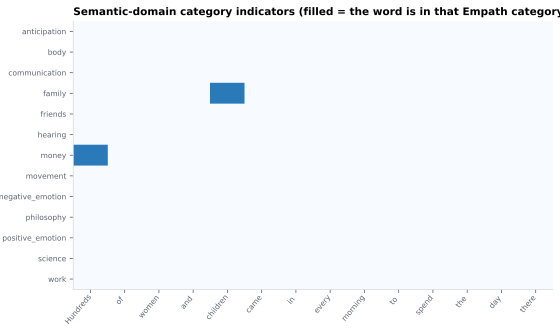

On this page
6.1.13Semantic-domain category indicators
Per-word indicators of membership in semantic / psychological categories from a dictionary backend (LIWC or Empath).
6.1.13.1What it is
Per-word indicators of membership in semantic / psychological categories from a dictionary backend (LIWC or Empath). For each active category, the extractor emits one binary column:
Sem_LIWC_Affect=1if the word is in LIWC's "Affect" category,0if it's a content word that doesn't match,NaNif it's a function word.- Same shape for any other selected category, with the dictionary
prefix (
LIWCorEmpath).
Plus a roll-up column Sem_Categories — a comma-separated list of all
categories matched by the word (or "" if none, NaN if function
word). In the CSV both "" and NaN are written as an empty cell,
so the distinction does not survive the file. To tell them apart, use a
per-category Sem_<Dict>_<cat> column (0 = scored content word with
no match, NaN = not scored) or the upos column (scored iff upos is
in the content-POS set below).
Content-POS filter: scoring is restricted to NOUN, VERB, ADJ,
ADV, PROPN. Function words, determiners, punctuation, etc. receive
NaN for every category column.
6.1.13.2See it

6.1.13.3In your output
| token | Sem_Categories | Sem_Empath_family | Sem_Empath_communication |
|---|---|---|---|
| Hundreds | money | 0 | 0 |
| of | |||
| women | 0 | 0 | |
| and | |||
| children | family | 1 | 0 |
| came | 0 | 0 | |
| in | |||
| every | |||
| morning | 0 | 0 | |
| to | |||
| spend | 0 | 0 | |
| the |
6.1.13.4MATLAB
% Load the word-level table (one row per word)
T = readtable('word/LJ003-0007_features.csv', 'TextType', 'string');
T.Properties.VariableNames % every column in the file
head(T(:, {'token', 'Sem_Categories', 'Sem_Empath_family', 'Sem_Empath_communication'}), 10) % this feature's columns (first rows)
% Plot
cats = startsWith(T.Properties.VariableNames, 'Sem_') & ~strcmp(T.Properties.VariableNames, 'Sem_Categories');
imagesc(T{:, cats}'); yticks(1:nnz(cats)); yticklabels(T.Properties.VariableNames(cats))
xticks(1:height(T)); xticklabels(T.token)
6.1.13.5Backends and category selection
ℹ️ LIWC is disabled in SENSI SpeechFeatures. The LIWC-22 license agreement (EULA) forbids using LIWC dictionary material outside LIWC's own software, so SENSI SpeechFeatures can neither ship a
.dicnor auto-select LIWC. The LIWC radio on the Word-level page is shown but greyed out, and Empath is the default. To obtain a LIWC license, see https://liwcsoftware.onfastspring.com/.
| Backend | License | Source | Status in app |
|---|---|---|---|
| Empath | Free / open-source | pip install empath |
Default, fully enabled |
| LIWC | Commercial; licensed .dic required |
LIWC-2022 (or earlier) | Disabled (EULA) |
Backend selection logic (from detect_backend()): always returns
Empath. A stray .dic under data/dictionaries/ does not activate
LIWC.
Categories are selected per-backend on the Word-level features →
Semantic indicators card (via the "Configure word-level categories…"
button) and the same selection is reused at the document level (see
doc_category_proportions if/when
that doc exists).
6.1.13.6In the code
Source: sensi/extractors/semantic_domain.py:add_semantic_domain. Backend
classes: _LiwcScorer and _EmpathScorer in the same file.
What the code does:
- Reads
backend("liwc"or"empath") andcategories(list of category names) from the call site (planner → main). - Instantiates the matching scorer:
_LiwcScorerloads the.dicvia theliwcPython package'sload_token_parser(trie-based)._EmpathScorerinstantiatesEmpath()(loads its embedded JSON of categories).
- Iterates over the word-level DataFrame; for each row:
- If
uposis not in{NOUN, VERB, ADJ, ADV, PROPN}→ sentinelNone(will becomeNaNin every category column). - Otherwise calls
scorer.categories_for(lemma, categories)→ returns aset[str]of matched category names.
- If
- For each requested category, emits a
Sem_<Dict>_<cat>column (1 / 0 / NaN as above). - Emits a
Sem_Categoriesroll-up column with the sorted comma-separated match list.
6.1.13.7Library
# LIWC
import liwc
parse, categories = liwc.load_token_parser("data/dictionaries/liwc-2022.dic")
matched = list(parse("happy")) # → ['Affect', 'PosEmo', 'Tone', ...]
# Empath
from empath import Empath
lex = Empath()
"happy" in lex.cats["joy"] # → True
6.1.13.8EEG rationale
Category indicators provide per-word semantic-class regressors that go beyond surface lexical features (frequency, surprisal). They let you ask "do emotion words elicit a larger N400 than neutral words in this stimulus?" without hand-tagging the transcript.
Specific uses:
- Emotional valence / arousal contrasts — LIWC's Positive Emotion / Negative Emotion or Empath's affection / sadness categories are common emotion regressors. Emotional words modulate ERPs in valence- and arousal-dependent ways (Citron 2012 review); arousal effects appear early in the early posterior negativity (EPN), with interactive arousal × valence effects for high-arousal positive and low-arousal negative words (Recio 2014).
- Concrete vs abstract concepts — affect concreteness ratings predict N400 amplitude (Barber 2013); LIWC and Empath both have categories that approximate concreteness clusters.
- Topic / discourse markers — useful for grouping words into thematic streams across long stimuli for time-resolved topic-effect analyses.
LIWC categories are the more established psycholinguistic feature set (Tausczik 2010, Pennebaker 2015); Empath is a free open-source alternative (Fast 2016) that auto-generates categories via word-embedding similarity to seed terms — useful when LIWC is not available, but its categories are less curated.
6.1.13.9Papers
LIWC:
- Pennebaker 2015 Pennebaker, Boyd, Jordan, Blackburn. The Development and Psychometric Properties of LIWC2015. UT Austin technical report. doi:10.15781/T29G6Z
- Tausczik 2010 Tausczik & Pennebaker. The Psychological Meaning of Words: LIWC and Computerized Text Analysis Methods. J. Language and Social Psychology. doi:10.1177/0261927X09351676
Empath:
- Fast 2016 Fast, Chen, Bernstein. Empath: Understanding Topic Signals in Large-Scale Text. CHI 2016. arXiv:1602.06979
Per-category ERP modulation:
- Citron 2012 Citron. Neural correlates of written emotion word processing: A review of recent electrophysiological and hemodynamic neuroimaging studies. Brain & Language 122(3), 211–226. doi:10.1016/j.bandl.2011.12.007
- Recio 2014 Recio, Conrad, Hansen, Jacobs. On pleasure and thrill: The interplay between arousal and valence during visual word recognition. Brain & Language 134, 34–43. doi:10.1016/j.bandl.2014.03.009
- Barber 2013 Barber, Otten, Kousta, Vigliocco. Concreteness in word processing: ERP and behavioral effects in a lexical decision task. Brain & Language 125(1), 47–53. doi:10.1016/j.bandl.2013.01.005